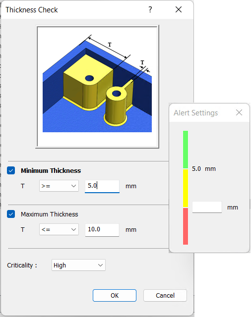
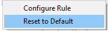

ルール構成は通常、一度だけ実施する作業であり、組織内の製造エンジニアやシニア設計エンジニアが担当します。
ルールマネージャーダイアログボックスでは、解析対象とするルールの選択／解除や、既定のルール構成値の編集が可能です。
ルールマネージャーダイアログボックスを開くには、以下のいずれかの方法を使用します：
DFMPro メニュー上の DFMPro ルールマネージャー ボタンをクリックします。
DfmProRuleBuilderu.exe を右クリックし、コンテキストメニューから 管理者として実行 を選択します。ファイルの場所は以下のとおりです。
C:\Program Files\Geometric\DFMPro for Creo Parametric(x64)\DFMPro
ルールマネージャーダイアログボックスのタイトルバーに、正しいルールファイルが表示されていることを確認します。
任意のヘッダー列をクリックすると、上矢印 または下矢印 が表示され、ルール、カテゴリ、モジュール、重要度、カスタムメッセージの各列をアルファベット順に並べ替えることができます。
一覧から目的のルールをハイライトし、ダブルクリックするか、 ルールを構成 ボタンをクリックして、ルール構成ダイアログボックスを開きます。
DFMPro では、値の構成欄をクリックすることで、推奨値およびアラートのしきい値を設定できます。
たとえば、最小厚さおよび最大厚さに対して、推奨値とアラートのしきい値を設定できます。

結果は、推奨値およびアラート値に基づいて分類されます。最小厚さが 5.0 mm 未満の場合は推奨事項として分類され、5.0 mm～10.0 mm の範囲の値はアラートとして分類されます。
推奨事項およびアラートに対応するルールの一覧は、(*) 印で示されています。
必要に応じて値を変更し、OK ボタンをクリックします。
コンテキストメニューから 既定値にリセット を選択します。変更されたルール構成値は既定値に戻されます。

期待値
一部のルールでは、パーツ内のパラメータを算出し、その値を期待値と比較します。必要に応じて、この期待値を変更してください。
ルールマネージャーダイアログボックスで単位系を変更するには、 ルール入力単位 ボタンをクリックします。DFMPro では、企業標準に合わせて 単位を設定 できます。
重要度
ルールの重要度を指定します。
注記:
以下のアセンブリルールでは、既定値にリセット は サポートされていません。